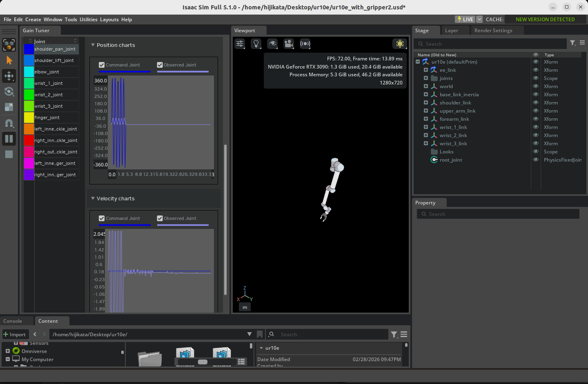

ジョイントドライブゲインの調整¶
学習目標¶
このチュートリアルを修了すると、以下の内容を習得できます：
- Gain Tuner エクステンションの起動方法と UI の使い方
- ポジションドライブ（位置制御）のゲイン調整手順
- 産業用ロボットを想定した速度制限の設定方法
- ベロシティドライブ（速度制御）のゲイン調整手順
- 調整したゲインをアセット（USD ファイル）に保存する方法
- 調整結果のプロットによる可視化と評価方法
- Snap-to-Limits テストとストレステストによるゲインの検証方法（Isaac Sim 6.0 の新テストモード）
はじめに¶
前提条件¶
- チュートリアル 7: マニピュレータの設定 を完了していること
- ロボットアセットに以下の 2 つが適用されていること（URDF からインポートしたロボットでは両方とも自動的に適用されます）：
- Robot Schema（Robot API）：Gain Tuner がロボットを認識するために必須
- アーティキュレーションルート（Articulation Root）：物理的にアーティキュレーションとして駆動するために必須
Gain Tuner と Robot Schema の関係
Gain Tuner は、内部的に Robot Schema（IsaacRobotAPI、IsaacLinkAPI、IsaacJointAPI）を使用してロボットの構造を把握します。具体的には、Gain Tuner ウィンドウの Select Robot ドロップダウンには Robot API が適用されたプリムだけが表示される実装になっています。そのため Robot Schema が適用されていないアセットは、たとえアーティキュレーションが有効でも Gain Tuner からは見えません。
チュートリアル 6 で URDF からロボットをインポートする際、URDF インポーターが Robot Schema を自動的に適用します。したがって、URDF 経由でインポートしたロボットを使い続けている限り、追加の操作は不要です。
チュートリアル 5 のように手動リギングしたロボットや、URDF を経由していない既存の USD アセットを使う場合は、別途 Robot Schema を適用する必要があります。手順はチュートリアル 5a: Robot Schema の適用 を参照してください。
所要時間¶
約 15〜20 分
概要¶
ロボットを Isaac Sim 上で正しく動かすためには、各ジョイントのドライブゲイン（PD 制御のパラメータ）を適切に調整する必要があります。ゲインが小さすぎるとロボットが目標位置に追従できず、大きすぎると振動したり不安定になったりします。
チュートリアル 7 では、Natural Frequency（固有振動数） と Damping Ratio（減衰比） という抽象化されたパラメータで Gain Tuner の基本的な使い方を学びました。本チュートリアルでは、より直接的な Stiffness / Damping の調整手順と、産業用ロボットで重要となる速度制限、ベロシティドライブの調整、調整結果の保存と可視化まで踏み込んで学びます。具体的には以下の流れで進めます：
- Gain Tuner の起動 — エクステンションを開いてロボットを読み込む
- ポジションドライブの調整 — Stiffness（剛性）と Damping（ダンピング）の調整
- 速度制限の設定 — 産業用ロボットを想定した速度上限の組み込み
- ベロシティドライブの調整 — 速度制御モードでの Damping 調整
- ゲインの保存 — 調整結果をアセットの物理レイヤーに書き戻す
- 結果の可視化 — 指令値と計測値のプロットで挙動を評価
- テストモードによる検証 — Snap-to-Limits とストレステストでゲインの妥当性を確認（Isaac Sim 6.0）
Isaac Sim 6.0 での公式チュートリアルの再構成
Isaac Sim 6.0 の公式チュートリアル（Tutorial 11）は、URDF からインポートしたゲインゼロの UR10 を出発点に、Snap-to-Limits テストでゲイン不足を診断し、ストレステストで速度制限の重要性を確認する構成に書き直されました。本ページのステップ 2〜4 で扱うチューニング手法は、公式リファレンス（Gain Tuner Extension）の「Tuning Workflow」節に整理されています。6.0 の新しいテストモードはステップ 7 で扱います。
ジョイントドライブとは
Isaac Sim のジョイントドライブは、各ジョイントに組み込まれた仮想モーターのようなものです。目標値（位置または速度）を与えると、内部の PD 制御（比例・微分制御）が目標との差を計算してトルクを発生させ、ジョイントを駆動します。
PD 制御では 2 つのパラメータが重要になります：
- Stiffness（剛性、P ゲイン）: 目標位置に引き戻すばねの強さ。大きいほど素早く目標に到達するが、大きすぎると行き過ぎ（オーバーシュート）や振動が発生する。
- Damping（ダンピング、D ゲイン）: 速度に応じて運動を抑える摩擦の強さ。振動を抑える役割を果たすが、大きすぎると応答が鈍くなる。
良いゲインとは、「目標値に素早く到達し、振動せず、行き過ぎが小さい」状態を実現する組み合わせです。
ポジションドライブとベロシティドライブ
Isaac Sim のジョイントドライブには 2 つのモードがあります：
| モード | 制御目標 | 主に使うパラメータ | 用途 |
|---|---|---|---|
| ポジションドライブ | 目標位置 | Stiffness + Damping | マニピュレータの軌道追従、姿勢保持 |
| ベロシティドライブ | 目標速度 | Damping のみ（Stiffness=0） | グリッパーの把持、車輪の回転 |
どちらのモードを使うべきかは、対象ジョイントの役割で決まります。本チュートリアルでは両方の調整方法を扱います。
ステップ 1：Gain Tuner エクステンションの起動¶
1-1. ロボットアセットを開く¶
調整したいロボット（例：チュートリアル 7 で設定した UR10e）を Isaac Sim で開きます。
Robot Schema とアーティキュレーションが適用されていることを確認
URDF インポート経由のロボットであれば自動的に適用されていますが、念のため確認しておきます：
- Stage パネルでロボットのルートプリム（例：
/World/ur10e）を選択 - Properties パネルの Add ボタン横の検索欄や Raw USD Properties で、以下が適用されているか確認：
- IsaacRobotAPI（Robot Schema）：Gain Tuner のドロップダウンに表示されるための必須条件
- PhysicsArticulationRootAPI（Articulation Enabled が有効）：物理シミュレーションのアーティキュレーションとして動作するための必須条件
未設定の場合はチュートリアル 6 の URDF インポートからやり直すか、チュートリアル 7 のステップ 1 を参照してアーティキュレーションを設定してください。
1-2. Gain Tuner を開く¶
メニューから次の順にクリックして Gain Tuner ウィンドウを開きます：
Tools > Robotics > Asset Editors > Gain Tuner

ウィンドウ上部の Select Robot ドロップダウンから、調整したいロボットを選択します。Robot Schema が適用されたアセットが自動的に候補に表示されます。
選択すると、左側のジョイントリストに対象ロボットの全ジョイントが一覧表示されます。
Gain Tuner エクステンションが見つからない場合
既定では有効になっていますが、メニューに表示されない場合は Window > Extensions を開き、isaacsim.robot_setup.gain_tuner を検索して有効化してください。
1-3. UI の構成¶
Gain Tuner のウィンドウは、大きく 3 つの領域に分かれています：
| 領域 | 役割 |
|---|---|
| Joint List（左側） | ロボットの全ジョイントを一覧表示。クリックして選択するとパラメータ編集と結果表示の対象になる |
| Parameters（中央） | 選択中ジョイントの Stiffness、Damping、Max Joint Velocity などを編集 |
| Plots（右側／下部） | テスト実行後、指令値と計測値の比較プロットを表示 |
複数ジョイントの選択
左側の Joint List では複数選択が可能です：
- Ctrl + クリック: クリックしたジョイントを選択／選択解除
- Shift + クリック: 最初に選択したジョイントから現在のジョイントまでを範囲選択
複数選択しておくと、まとめてゲインを設定したり、複数ジョイントのプロットを並べて比較したりできます。
ステップ 2：ポジションドライブのゲイン調整¶
ポジションドライブは、ジョイントを目標角度（または目標位置）に近づけるよう PD 制御で駆動します。Stiffness と Damping の 2 つのパラメータをバランス良く設定するのが目的です。
2-1. 調整の基本方針¶
ゲイン調整は次の順序で進めます：
- Damping をゼロにする — まずは比例項（Stiffness）のみで応答を見る
- Stiffness を増やしていく — 目標位置に収束する値を見つける
- Stiffness を 1 桁下げる — オーバーシュートに余裕を持たせる
- Damping を加える — Stiffness より 1 桁小さい値から開始
- 微調整する — 安定性、応答速度、オーバーシュートを見ながら値を詰める
なぜこの順序なのか
Damping を入れたまま Stiffness を調整すると、振動が抑えられているのか、本当に応答が良いのか判別しにくくなります。まず Stiffness 単独で「ぎりぎり収束する」点を探し、そこから 1 桁下げて余裕を作ったうえで Damping を加えるのが、安全に追い込むコツです。
2-2. Damping をゼロに設定¶
- 左側の Joint List で調整するジョイントを選択（複数選択可）
- 中央の Damping フィールドに
0を入力 - Stiffness を初期値（例：
100）に設定

2-3. Stiffness を段階的に増やす¶
シミュレーションを実行（タイムラインの Play をクリック）し、ジョイントが目標位置に収束するかを観察します。
- 収束しなければ Stiffness を 10 倍にして再実行（例：100 → 1,000 → 10,000）
- 目標位置付近で振動・暴走するようであれば、その値が上限の目安
目標値付近におおよそ収束するところまで Stiffness を上げたら、その値から 1 桁（約 1/10）下げて、安定に余裕を持たせます。

2-4. Damping を加える¶
Stiffness が決まったら、その値の 約 1/10 を初期値として Damping に入力します。
例：Stiffness = 1,000 の場合、Damping = 100 から開始
再度シミュレーションを実行し、以下のポイントで評価します：
| 観点 | 良い状態 | 悪い状態と対処 |
|---|---|---|
| 収束速度 | 短時間で目標値に到達 | 遅すぎる場合は Stiffness を上げる |
| オーバーシュート | 目標値の 1% 以内を理想とする | 大きい場合は Damping を上げる |
| 振動 | 振動なく単調に収束 | 振動する場合は Damping を上げる |
| 応答の鈍さ | 過剰な減衰でない | 鈍い場合は Damping を下げる |
推奨される性能目標
Isaac Sim の公式ガイドでは、目標値からの誤差（オーバーシュート含む）を 1% 以内に収めることを推奨しています。シビアな精度が求められない用途であれば、もう少し緩い基準でも実用上問題ありません。
2-5. 重力補償が組み込まれているロボットの場合¶
UR10e や Franka など、コントローラ側で重力補償を行うことを前提に設計されたロボットでは、Isaac Sim 内でも重力の影響をジョイントが負わないように設定するのが一般的です。
- 各リンク（Rigid Body）を Stage パネルで選択
- Properties パネルの Physics > Rigid Body セクションを開く
- Disable Gravity にチェックを入れる
これにより、ジョイントドライブは重力に逆らうトルクを発生させる必要がなくなり、ゲインの調整が「位置追従の精度」に集中できます。
重力をオンにしたまま調整する場合
重力補償を行わない場合は、ジョイントが重力に負けないだけの Stiffness が必要になります。リンクの質量や姿勢に依存するため、最も重力負荷がかかる姿勢（例：水平に伸ばした腕の根本）でテストすると安全側のゲインが得られます。
2-6. ジョイントごとのグルーピング戦略¶
ヒューマノイドロボットのように腕と脚が独立して動く機体では、すべてのジョイントを同時に動かしてゲイン調整するのは大変です。機能ごとにジョイントをグループ化して個別に調整したうえで、最後に全体テストを行うのが効率的です。
例：ヒューマノイドの場合 - グループ 1：右腕の 7 ジョイント - グループ 2：左腕の 7 ジョイント - グループ 3：両脚（同期させて歩行する） - 最後：全ジョイントを動かして相互干渉を確認
ステップ 3：速度制限と産業用ロボット¶
産業用ロボット（UR、ABB、KUKA など）の多くは、メーカー側で事前に PD 制御がチューニングされており、加えてジョイントごとの速度上限が設けられています。Isaac Sim でこれを再現するには、ゲインに加えて最大ジョイント速度を設定します。
3-1. Stiffness を強めにする¶
産業用ロボットを再現する場合、ステップ 2 で得た Stiffness を約 2 倍に強化します。これにより、目標位置への追従が速度上限まで素早くフルスピードで近づくようになります。
例：通常時 Stiffness = 1,000 → 産業用想定 Stiffness = 2,000
3-2. 最大ジョイント速度の設定¶
各ジョイントに速度上限を設定します：
- Stage パネルで対象のジョイントを選択
- Properties パネルで Joint > Advanced セクションを展開
- Maximum Joint Velocity に各ジョイントの最大速度（rad/s または deg/s）を入力
メーカーのデータシートに記載された各軸の最大角速度を参考にしてください。
シミュレーション中のデフォルト値は大きすぎる傾向がある
USD のデフォルト値は実用範囲を大きく超えていることが多いため、実機の運用上限に合わせて下げることを推奨します。これは安全性とシミュレーション安定性の両方に効きます。
3-3. 速度上限の確認¶
シミュレーションを実行し、Gain Tuner のプロットでジョイント速度が指定した上限を超えていないか確認します。超えてしまう場合は Stiffness を下げ、上限に届かない場合は Stiffness を上げて、目標速度にぎりぎり到達できるように微調整します。
ステップ 4：ベロシティドライブのゲイン調整¶
ベロシティドライブは、ジョイントを目標速度に追従させる制御モードです。グリッパーの把持や車輪の回転制御で使われます（チュートリアル 10: 閉ループ構造のリギング でも使用しました）。
4-1. Stiffness をゼロに設定¶
ベロシティドライブでは位置目標を無視し、速度目標のみを使用します：
- 対象ジョイントを Joint List で選択
- Stiffness に
0を入力 - Damping を初期値（例：
100）に設定
Stiffness=0 が「速度制御」を意味する理由
Isaac Sim のジョイントドライブは内部的には常に PD 制御として動きますが、Stiffness を 0 にすると比例項（位置誤差）が消え、Damping のみで駆動トルクが決まります。Damping は速度誤差に応じてトルクを発生させるため、結果として目標速度に追従する制御になります。
4-2. Damping を段階的に増やす¶
シミュレーションを実行し、ジョイントが目標速度に到達するまで Damping を上げていきます：
- 目標速度（Target Velocity）を設定
- シミュレーション実行
- プロットで実速度が目標速度に到達するまで Damping を 10 倍ずつ増やす
- 目標速度にほぼ到達するところで停止
4-3. ペイロード変動への対応¶
把持物や搬送物などで負荷が変動することが想定される場合、Damping を約 10% 増しに設定すると、負荷時にも目標速度を維持しやすくなります。
例：無負荷で Damping = 5,000 → 負荷想定で Damping = 5,500
4-4. 出力上限の設定¶
ベロシティドライブでは、Maximum Joint Velocity または Maximum Joint Force で出力を制限できます：
| 制限項目 | 設定場所 | 効果 |
|---|---|---|
| Maximum Joint Velocity | Joint > Advanced | 速度の上限 |
| Maximum Joint Force | Drive > Max Force | 駆動力の上限 |
把持動作では、Max Force を絞ることで把持物に過大な力をかけずに済みます（チュートリアル 10 のステップ 5-6 を参照）。
ステップ 5：ゲインのアセットへの保存¶
調整したゲインを USD ファイルに保存して、次回以降の起動時にも反映されるようにします。
5-1. Save Gains to Physics Layer¶
Gain Tuner ウィンドウの Save Gains to Physics Layer ボタンをクリックします。
このボタンは、ロボットアセットの推奨構造（アセット構造ガイドライン）に従って、物理設定を記録するレイヤーを自動的に検出し、そのレイヤーに新しいゲインを書き込みます。
なぜ専用レイヤーに保存するのか
Isaac Sim のロボットアセットは、メッシュ・物理・センサーといった役割ごとに USD レイヤーが分かれていることが推奨されています（チュートリアル 10 のレイヤー編集ワークフローを参照）。物理パラメータを物理レイヤーに集約しておくことで、メッシュ更新時にもゲイン調整を失わずに済みます。
5-2. 保存できない／したくない場合¶
書き込み権限がない、あるいは元のロボットアセットを変更したくない場合は、ゲインの変更を別のシーンファイルにオーバーライドとして記録します。File > Save As で新しいファイル名（例：my_robot_with_tuned_gains.usd）として保存するのが、最も明示的で安全な方法です。これにより：
- 元のロボット USD ファイルは一切変更されない
- 新しく作ったファイルがロボットアセットを参照／サブレイヤーとして取り込み、その上にゲインのオーバーライドが書き込まれる
- そのファイルを開けば調整済みのゲインが反映され、元アセットを開けば調整前の状態に戻る
File > Save は Root Layer を上書きする
File > Save は現在開いているステージの Root Layer をそのまま上書きします。そのため、ロボット本体の USD ファイルを直接開いた状態で File > Save をすると、書き込み権限がある場合は元のロボットを上書きしてしまいます。
「ローカルオーバーライドにしたい」つもりで Save を使うのは危険です。ロボット本体を変更したくない場合は、必ず Save As で別ファイルとして保存するか、最初からロボットを参照（Reference／Payload）した自前のシーンファイルを開いて作業してください。
どちらの保存先にすべきか
| 状況 | 推奨される保存方法 |
|---|---|
| 元アセットの一部としてゲインを永続化したい | Save Gains to Physics Layer（5-1） |
| 元アセットを変更せず、自分の用途用のバリアントを作りたい | File > Save As で別ファイル化 |
| すでにロボットを参照する自前のシーンを開いている | File > Save（変更はシーンファイルにのみ書き込まれる） |
ステップ 6：結果の可視化¶
6-1. プロットの読み方¶
Gain Tuner のプロット領域には、テスト実行後に以下が表示されます：

| 表示要素 | 意味 |
|---|---|
| 濃い色のライン | 指令値（Commanded Position / Commanded Velocity） |
| 薄い色（フェード）のライン | 計測値（実際のジョイント位置・速度） |
| 色分け | ジョイントごとに別の色で表示 |
理想的な調整状態では、薄い線（計測値）が濃い線（指令値）に遅延なくぴったり重なる形になります。
6-2. プロットからの読み取りポイント¶
| プロットの形 | 状態 | 対処 |
|---|---|---|
| 計測値が指令値の到達前に振動 | Stiffness が高すぎる | Stiffness を下げるか Damping を上げる |
| 計測値が指令値に追いつかない | Stiffness が低すぎる | Stiffness を上げる |
| 目標値を行き過ぎて戻る | オーバーシュート（Damping 不足） | Damping を上げる |
| 応答が滑らかだが遅い | Damping 過多 | Damping を下げる |
| 目標速度の上限で頭打ちになる | Maximum Joint Velocity による制限（産業用想定では正常） | 必要に応じて上限を見直す |
6-3. ジョイント単位の評価¶
左側の Joint List で個別のジョイントをクリックすると、そのジョイントのプロットだけを大きく表示できます。複数選択した状態（Ctrl/Shift クリック）で複数プロットを並べて比較することもできます。
テスト結果はテスト完了後にのみ表示される
シミュレーション実行中はリアルタイムにプロットが更新されないことがあります。シミュレーションを停止した後にプロットを確認してください。
ステップ 7：テストモードによる検証（Isaac Sim 6.0）¶
Isaac Sim 6.0 の Gain Tuner には、ゲインの妥当性を体系的に検証するためのテストモードが用意されています：
| テストモード | 内容 | 用途 |
|---|---|---|
| Snap-to-Limits（デフォルト） | 各ジョイントを可動域の下限・上限まで動かす | ゲインが可動域全体に到達できる強さかどうか、制限・ゲイン・コリジョン形状の整合性を確認 |
| Sinusoidal | 連続した正弦波軌道で駆動 | 滑らかな軌道への追従性、不足減衰／過減衰の判定 |
| Step Function | ステップ状の目標値変化で駆動 | ステップ応答（立ち上がり・オーバーシュート）の評価 |
| Stress Test | 極端なランダム指令で駆動 | 強化学習（Isaac Lab）で発生するような過酷な指令に対する安定性の確認 |
7-1. Snap-to-Limits テスト¶
公式チュートリアルでは、URDF からインポートした直後（全ジョイントのゲインがゼロ）の UR10 に対して、次の流れでゲインを診断します：
- 全ジョイントの Stiffness に小さな値（例：
10）、Damping に0を設定 - Snap-to-Limits テストモードを選択し、全ジョイントの Test チェックボックスを有効化
- Play を押してから Run Test を実行
Stiffness が不足していると、アーム全体の重量を支える shoulder_lift_joint や elbow_joint が Fail（可動域の端に到達できない）になります。
Fail と Blocked の見分け方
Blocked と報告されたジョイントは、コリジョン形状が可動域の端への到達を妨げている可能性があります。Disable Self-Collisions を有効にして再実行し、それで Pass するなら「ジョイント制限がコリジョン形状の許容範囲を超えている」ことが原因です。この場合はゲインではなく、USD 側のジョイント制限を狭めてください。
公式チュートリアルで UR10 が Snap-to-Limits に合格するゲインの例：
| ジョイント | Stiffness | Damping |
|---|---|---|
| shoulder_pan_joint | 500000 | 50 |
| shoulder_lift_joint | 500000 | 50 |
| elbow_joint | 50000 | 50 |
| wrist_1_joint | 500 | 0.5 |
| wrist_2_joint | 500 | 0.5 |
| wrist_3_joint | 50 | 0.0 |
Max Force（最大トルク）にも注意
UR10 の URDF にはジョイントごとの最大トルク（肩 330 Nm、肘 150 Nm、手首 56 Nm）が定義されており、USD の Max Force としてインポートされます。Stiffness を上げてもテストに合格しない場合は、Properties パネルの Joint > Advanced > Maximum Force を大きな値または inf（無限大）に設定してください。UR10 では shoulder_pan_joint と shoulder_lift_joint に無限大の Max Force が必要です。
7-2. ストレステスト¶
チューニング済みのゲインを適用したら、Stress Test で強化学習の学習時に典型的な極端な指令に対する安定性を確認します：
- Stress Test モードを選択し、Random Walk サブモードを選ぶ
- 全ジョイントの Sequence を
1に設定（並列にテスト） - Disable Velocity Limits はオフ（デフォルト）のまま Play → Run Test
- 全ジョイントが Stable と報告されることを確認
次に、Disable Velocity Limits を有効にして再実行すると、一部のジョイントが Unstable になります。速度制限がないと、PD 制御が大きな位置誤差に対して 1 ステップで極端な速度まで加速するトルクを生成し、離散時間ソルバーが収束できずにエネルギーの発散や NaN が発生するためです。
速度制限の 2 つの役割
- 物理的な忠実性 — 実機のアクチュエータにはメーカー指定の最大速度があります（UR10 の URDF では各ジョイント約 2〜3 rad/s）。シミュレーションにも設定することで実機の運動範囲を再現できます。
- ソルバーの安定性 — ジョイント速度に上限を設けることで、1 ステップあたりの変位が PhysX の陰的積分器が数値的に安定を保てる範囲に収まります。
アプリケーションの都合で速度制限を上げる必要がある場合は、少しずつ上げてはストレステストを再実行し、ソルバーが安定していることを確認してください。Adversarial サブモードでも同じ比較を行うと、最悪ケースの相関した姿勢に対する安定性も確認できます。
Stable の解釈
Stable という結果は、テストで使用した sigma やスナップ間隔の値に対してのみ有効です。Isaac Lab での学習に向けた準備状況を評価する場合は、これらのパラメータを結果と一緒に記録しておきましょう。
トラブルシューティング¶
| 症状 | 原因 | 解決方法 |
|---|---|---|
| Gain Tuner のドロップダウンにロボットが表示されない | Robot Schema（IsaacRobotAPI） が適用されていない | URDF からインポートしていれば自動適用されるはず。手動アセットの場合は Robot Schema を適用するか、URDF 経由でインポートし直す |
| Gain Tuner で選択後、ジョイントが取得できない／エラーが出る | アーティキュレーションが未設定 | ルートジョイントに Articulation Root API が適用され、Articulation Enabled がオンになっているか確認（チュートリアル 7 のステップ 1 参照） |
| ジョイントが目標位置に収束しない | Stiffness が小さすぎる／重力補償未設定 | Stiffness を 10 倍に増やす、または Disable Gravity を有効化 |
| シミュレーション開始直後に発散する | Stiffness が大きすぎる | Stiffness を 1/10 に下げる |
| 細かく振動する | Damping 不足 | Damping を 2〜10 倍に増やす |
| 応答が鈍い／追従が遅い | Damping 過多 | Damping を 1/2 に下げる |
| 産業用ロボットの最大速度を超えてしまう | Maximum Joint Velocity 未設定 | Joint > Advanced で各軸に設定 |
Stiffness attribute is unsupported for articulation joints 警告 |
ジョイント自体の Stiffness 属性に値を設定 | 該当ジョイントの Drive 側 の Stiffness を使用（チュートリアル 10 のステップ 5-3 参照） |
| 保存しても次回起動時にゲインが戻る | 物理レイヤーへの書き込み失敗 | レイヤーの書き込み権限を確認、またはステージとして手動保存 |
まとめ¶
このチュートリアルでは以下のトピックを扱いました：
- Gain Tuner エクステンション の起動と UI 構成（Joint List / Parameters / Plots）
- ポジションドライブの調整手順（Damping=0 から始め、Stiffness で収束点を探し、Damping で振動を抑える）
- 産業用ロボットの再現（Stiffness の強化と Maximum Joint Velocity による速度制限）
- ベロシティドライブの調整手順（Stiffness=0、Damping のみで速度追従）
- ゲインのアセットへの保存（Save Gains to Physics Layer による物理レイヤーへの書き込み）
- プロットによる結果の可視化と評価（指令値と計測値の比較）
- Snap-to-Limits テストとストレステストによる検証（Fail / Blocked の切り分け、速度制限とソルバー安定性）
これらの調整により、ロボットが安定かつ応答性良く動作するようになり、上位の制御アルゴリズムが期待通りに振る舞う土台が整います。
より深く学ぶには
Gain Tuner の数学的背景や PD 制御の理論については、Isaac Sim 公式ドキュメントの Gain Tuner Extension を参照してください。また、トルク指令を直接書き込むカスタムコントローラを実装したい場合は、本サイトのコントローラの追加チュートリアルが参考になります（対応する公式チュートリアルは 6.0 で削除されました）。
次のステップ¶
次のチュートリアル「アセット最適化」に進み、ロボットアセットのパフォーマンス最適化手法を学びましょう。